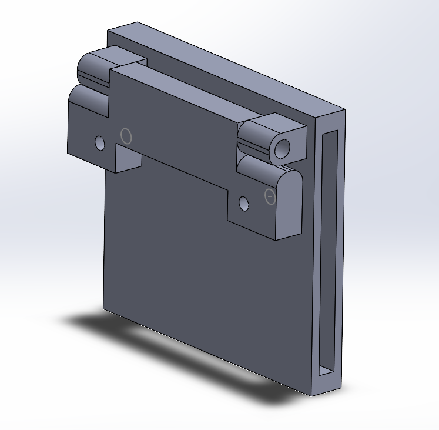
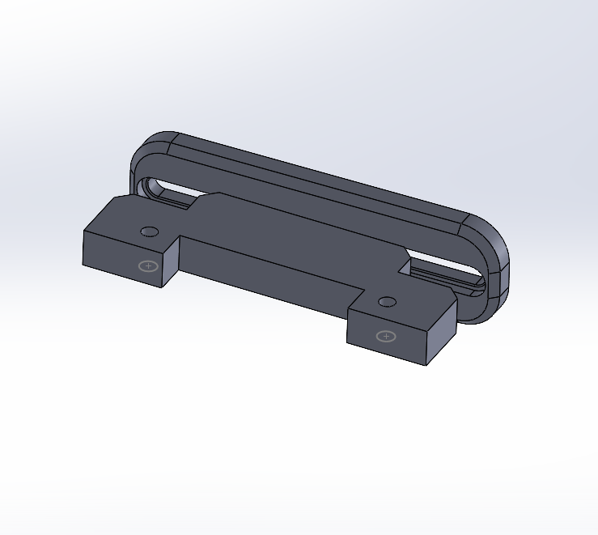

explanation
any visual addition
explanation
any visual addition
explanation
any visual addition
To support calibration, the mounts have been broken down into the camera mount and the robotic arm mounts. This allows for a more general-use design to be developed for more models of robots. They can be adjusted with one axis of rotation, and fixed in the adjusted angle using a bolt and screw. A future iteration will have better rotational options.


This week we added the appropriate packages to the Fanuc robot controller (thanks Fanuc!) For TCP/IP connection. This allowed us to connect the robot to RViz for live monitoring and control. The video below shows an example of the simulated robot in RViz moving alongside the physical robot in the lab.
This week models were designed for camera mounts to the robotic arm. Two general-use models have been developed for use with a strap to an individual link of the robotic arm or to be attached to existing fixtures on the sides of the robot.
This week we were able to control the Fanuc robot in simulation with the same packages that we used for controlling the actual robot. This provides us the flexibility to develop appropriate collision algorithms in rviz (using C++/Python in Linux), and observe its effect on the robot in simulation (using roboguide) running on a windows PC, without the need to have access to the real robot. The video below exhibits this scenario, with the left screen showing rviz running on a linux PC, and Fanuc's Roboguide running on the right screen on a windows PC.